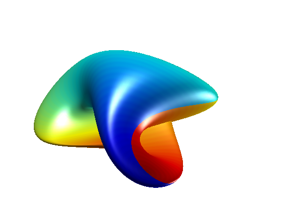

In 1901, David Hilbert assigned Werner Boy the task of proving once and for all that it was impossible to embed the Projective Plane into 3-space without singularities. Instead Boy came back with this surface. It has a triple point, but no singularity.
n = 128; u = linspace(0,pi,n); v = linspace(0,pi,n); u = repmat(u,n,1); v = repmat(v',1,n); x = cos(v).*sin(u); y = sin(v).*sin(u); z = cos(u); f = 1/2*((2*x.^2-y.^2-z.^2) + 2*y.*z.*(y.^2-z.^2) + ... z.*x.*(x.^2-z.^2) + x.*y.*(y.^2-x.^2)); g = sqrt(3)/2 * ((y.^2-z.^2) + z.*x.*(z.^2-x.^2) + x.*y.*(y.^2-x.^2)); h = (x+y+z).*((x+y+z).^3 + 4*(y-x).*(z-y).*(x-z)); s = surface(f,g,h/10,u, ... 'LineStyle','none', ... 'FaceLighting','gouraud', ... 'FaceColor','interp'); colormap jet; axis off; daspect([1 1 1]); l1 = light; l2 = light; lightangle(l1,70,-40); lightangle(l2,-30,80); view(-40,32); camzoom(1.5);